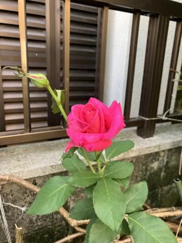

うるがいの話 ある日
最新: 映画館【うるがいの話 ある日】とは 一日だけのプログです
『うるがいの話』の最新一日だけのプログで、通信料が少なく経済的だ。カニの画像をクリックすると全ての日付が載る『うるがいの話』サイトを表示します
|
|
【うるがいの話】 うるがい(ｳﾙｶﾞｲ urugai)とは、『もずくがに』の名前でとても大きくなります。 |
|---|---|
|
|
【カミマヤーの話】 猫のことを方言でマヤーといいます。カミマヤー（kamimayaa）とは、神の猫のことです。 |
|
【たながぁの音楽】 たながぁ（ﾀﾅｶﾞｰ tanagaa）とは手長えびのことで、何種類かあり大きいのは車 エビぐらいになります。 |

|
【ぶながぁの話】 ぶながぁ(ﾌﾞﾅｶﾞｰ bunagaa)とは、赤い髪の毛、赤い身体、そして身長は１ｍ２０ｃｍ ぐらい、川の蟹を食べているの目撃された。場所は沖縄県国頭郡大宜味村のと ある村僕の隣近所に住んでいる爺さんから、聞いた話です。 |
|
|
【ギーマの話】 ギーマ(giima)とは、山原の里山に咲くスズランに似た、 花を付けます。実は食べられます、 気が付くと口の周りが紫になっています。 |
2026年05月08日 (金）映画館
15:18
新聞にまぼろし映画館の見出しで、辺士名映画劇場の記事が載っ
ていた。何歳か忘れたが、父親に連れられ銭湯に入ったあと、映
画館で映画を見た。外国の映画で、直ぐに寝た。ついでなので、
その後の映画鑑賞履歴をば
1978 国際劇場 『未知との遭遇』
国際通りテンプス広場にあった映画館
従弟の兄さんと見た。山原で、私が映画を見ていたと母
親に情報が、伝わっていた（さすが山原）
1982 琉映本館 『ネバーエンディング・ストーリー？』
安里三差路にあった映画館
従弟の小学生と見た。映画のタイトルは怪しい
1982 国映館 『チャタレイ夫人の恋人』
国際通り「ホテル コレクティブ」にあった映画館
従妹の高校生と見た。
2009 大阪のどこかの映画館 何をみたかも覚えていない
受験にいったコドモと訳ありで、２大学を受験せず。気分
転換で入ったが、コドモがコーラをこぼしてしまい、店員
を出動する騒ぎになった。
1982 シネマQ 『アバター３Ｄ』
おもろまちサンエーの映画館
３Ｄを見るためのメガネも買ったが、酔って５分持たず退
館。
2012 大阪の天王寺の映画館 『レ・ミゼラブル』
コドモが、天王寺にある大学病院に入院、ホテルで暇だっ
たので映画館に行った。
シネマQ以外は、今はありません。
ウォーキングで見かける百合、こんなうっそうとした草むらによ
く花を咲かせると毎年思う。
少し、寒かったのできれいな蕾をつけた薔薇
